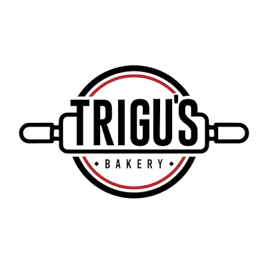

Inversión predecible, escalable y con retorno directo en eficiencia operativa.
Presentado a:
Junta Directiva y Dueños de la Empresa
Adecuación del servidor central, configuración de base de datos Profit, middleware y red VPN segura (ZeroTier).
Configuración integral, base de datos local Odoo, adecuación de servidor de tienda y enlace seguro VPN.
Instalación y puesta a punto de hardware (promedio 2 impresoras fiscales/comanderas). Por tiempo efectivo.
🎯 Alta Disponibilidad: Conexión cifrada punto a punto entre la Central y la sucursal, con total tolerancia a caídas de internet (modo offline autónomo en cajas).
| Fase / Componente del Proyecto | Subtotal Estimado |
|---|---|
|
Adecuación Servidor Profit (Sede Principal) Servidor central matriz, base de datos Profit, middleware y red VPN ZeroTier. |
600,00 € |
|
Configuración e Implementación Sede Piloto Servidor local de tienda, BD local Odoo POS, VPN y contingencia offline. |
600,00 € |
|
Paquete de Desarrollo, Puente y Soporte (100 hrs) Bolsa prepagada de horas técnicas para adaptaciones, puente e inducción. |
3.500,00 € |
| TOTAL INVERSIÓN INICIAL ESTIMADA* | 4.700,00 € |
* A este total se sumarán únicamente las horas exactas que tome la calibración física del hardware en sede (35,00 €/h).
💡 Escalabilidad Futura: Las siguientes sucursales no pagan horas de desarrollo ni servidor matriz; solo su tarifa fija local de 600,00 € y sus periféricos.
Flujo de pagos seguro condicionado a entregables técnicos tangibles y verificables:
Para iniciar la configuración del servidor, red ZeroTier y comenzar el consumo de horas de desarrollo base en Odoo (multimoneda, bloqueos, roles).
2.350,00 €
Al momento de encender el sistema en la primera panadería, conectar las impresoras y realizar la primera prueba de venta real.
1.410,00 €
Tras finalizar la inducción al personal, verificar la sincronización unidireccional de precios desde la central y dar por aprobado el funcionamiento fluido de la caja operativa.
940,00 €
El servidor matriz y el desarrollo del puente se amortizan en la fase inicial. Cada sucursal posterior reduce radicalmente el costo medio por sede:
• Sin costos ocultos ni licencias por usuario.
• Pagos condicionados a hitos 100% operativos.
• Servidor matriz y puente bajo control absoluto de la empresa.
• Activación inmediata tras aprobación directiva.
• Acompañamiento presencial durante el arranque.
• Plataforma lista para abrir sucursales adicionales a solo 600 €.